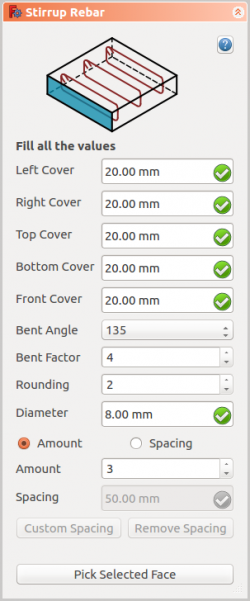

|
| Emplacement |
|---|
| Arch → Rebar tools |
| Atelier |
| Arch |
| Raccourci |
| None |
| Voir aussi |
| Armature hélicoïdale |
| Cette commande fait partie de Reinforcement AddOn, Vous pouvez l'installer via le menu Outils → Addons Manager |
Description
L'outil  Armature en étrier permet à l'utilisateur de créer une armature en étrier dans l'élément structurel.
Armature en étrier permet à l'utilisateur de créer une armature en étrier dans l'élément structurel.

Comment faire
- Créer un élément structure
- Sélectionnez une face de la structure
- Puis sélectionnez
 Armature en étrier à partir des outils d'armature
Armature en étrier à partir des outils d'armature - Un panneau de tâches apparaîtra sur le côté gauche de l'écran comme indiqué ci-dessous 
- Sélectionnez l'orientation souhaitée
- Donner les entrées comme le capot gauche, le capot droit, le capot supérieur, le fond, le capot avant, l'angle de pliage, la longueur de l'extrémité de l'étrier, l'arrondi et le diamètre des barres d'armature
- Sélectionnez le mode de distribution soit la quantité ou l'espacement
- Si l'espacement est sélectionné, un utilisateur peut également choisir espacement personnalisé
- Le choix de la face sélectionnée est utilisé pour vérifier ou changer la face pour la distribution des barres d'armature
- Cliquez sur OK ou Appliquer pour générer l'armature
- Cliquez sur Annuler pour quitter le panneau des tâches
{kind=link}
Propriétés
- DONNÉESFront Cover: La distance entre l'armature et la face sélectionnée.
- DONNÉESRight Cover: La distance entre l'extrémité droite de l'armature et la face droite de la structure.
- DONNÉESLeft Cover: La distance entre l'extrémité gauche de l'armature et la face gauche de la structure.
- DONNÉESBottom Cover: La distance entre l'armature et la face inférieure de la structure.
- DONNÉESTop Cover: La distance entre l'armature et la face supérieure de la structure.
- DONNÉESBent Angle: L'angle de pliage définit l'angle aux extrémités d'un étrier.
- DONNÉESBent Factor: Définit la longueur de l'extrémité de l'étrier.
- DONNÉESAmount: La quantité de barres d'armature.
- DONNÉESSpacing: La distance entre les axes de chaque barre.
Script
L'outil  Armature en étrier peut être utilisé dans une macro et depuis la console python en utilisant la fonction suivante:
Armature en étrier peut être utilisé dans une macro et depuis la console python en utilisant la fonction suivante:
makeStirrup(LeftCover, RightCover, TopCover, BottomCover, FrontCover, BentAngle, BentFactor, Diameter, Rounding, AmountSpacingCheck, AmountSpacingValue, Structure, Facename)
- Ajoute un objet barre armature Stirrup à l'objet structurel donné.
- Si aucune structure et facename ne sont donnés, l'utilisateur choisira la face comme entrée.
- Ici, l'argument CoverAlong a un type tuple.
- Renvoie le nouvel objet Rebar.
Exemple: Création d'armature en étrier.
import Arch, Stirrup structure = Arch.makeStructure(length=1000.0, width=400.0, height=400.0) structure.ViewObject.Transparency = 80 FreeCAD.ActiveDocument.recompute() rebar = Stirrup.makeStirrup(20, 20, 20, 20, 20, 135, 4, 8, 2, True, 10, structure, "Face6")
Modification des propriétés des barres d'armature en étrier.
import Stirrup Stirrup.editStirrup(rebar, 20, 20, 20, 20, 50, 90, 4, 8, 2, True, 6, structure, "Face6")